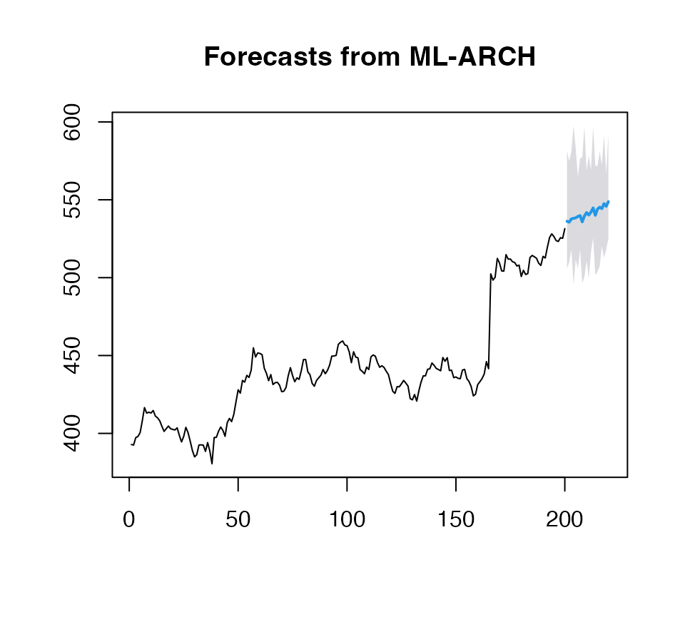

Beyond GARCH 2
mlarch2.RmdSequel of Beyond GARCH vignette, but using Statistical models for modeling the volatility.
# Default model for volatility (Ridge regression for volatility)
(obj_ridge <- ahead::mlarchf(fpp2::goog200, h=20L, B=500L, ml=FALSE, stat_model=forecast::thetaf))## Point Forecast Lo 95 Hi 95
## 201 536.2054 505.6594 581.3465
## 202 535.6320 509.9505 574.8681
## 203 537.7142 518.3064 580.7922
## 204 538.0782 495.5508 597.4993
## 205 538.4037 511.7046 583.2463
## 206 539.2916 505.7574 564.6969
## 207 539.8761 518.1284 576.6551
## 208 535.8308 496.5242 577.2230
## 209 539.6127 500.5297 596.9386
## 210 541.8106 510.9403 568.6235
## 211 540.1937 499.5550 578.3856
## 212 542.0689 516.2204 569.1159
## 213 544.7746 525.5217 596.9789
## 214 540.0157 501.5288 571.9634
## 215 544.0599 503.8352 571.5861
## 216 545.2578 507.2056 581.0531
## 217 544.3096 520.2311 572.5321
## 218 547.5311 512.6983 591.0378
## 219 545.7821 518.0341 566.8357
## 220 548.8086 525.1065 592.4416
plot(obj_ridge)
## Point Forecast Lo 95 Hi 95
## 201 533.6063 481.0192 570.9506
## 202 536.4092 503.3624 581.2989
## 203 537.2358 495.7773 583.8462
## 204 537.9316 505.8441 575.3274
## 205 538.4172 507.3681 570.2812
## 206 538.5916 502.4197 596.6023
## 207 540.6887 506.5532 588.1390
## 208 540.0524 511.1371 569.8022
## 209 538.2930 499.9576 574.7362
## 210 542.2922 516.4182 577.6927
## 211 541.5539 510.4885 579.4807
## 212 542.6594 509.6112 572.2687
## 213 543.2421 521.0324 586.9165
## 214 544.5528 507.6659 570.4883
## 215 545.0339 521.1688 576.4782
## 216 542.1945 486.2823 584.7215
## 217 545.5302 505.2753 578.6501
## 218 545.3284 516.2883 596.9567
## 219 547.4852 520.8460 590.9372
## 220 548.2263 510.6183 593.2234
plot(obj_ridge)
(obj_ridge <- ahead::mlarchf(fpp2::goog200, h=20L, B=500L, ml=FALSE, stat_model=forecast::auto.arima))## Point Forecast Lo 95 Hi 95
## 201 533.4403 493.6588 554.9328
## 202 535.2631 481.7112 579.0914
## 203 537.8149 515.4416 593.2429
## 204 538.8587 513.8721 570.0459
## 205 535.3934 513.9873 574.5562
## 206 538.2027 510.3389 571.8929
## 207 539.8733 513.1007 579.5405
## 208 540.3157 510.4600 592.9546
## 209 540.5027 506.2560 576.1825
## 210 540.3488 500.1463 572.2591
## 211 540.7761 510.1350 569.4324
## 212 543.9531 510.0663 593.4928
## 213 540.8240 509.5202 578.2108
## 214 543.4515 525.7414 608.4695
## 215 544.6165 513.5372 579.0868
## 216 540.5915 496.2024 575.2348
## 217 546.1268 519.5874 576.4986
## 218 542.1175 510.6967 589.8439
## 219 546.9907 519.0031 591.7855
## 220 547.2175 525.2034 596.6939
plot(obj_ridge)## Point Forecast Lo 95 Hi 95
## 201 533.6582 490.8830 569.6219
## 202 535.1014 508.9334 572.7208
## 203 535.4217 509.3062 577.2026
## 204 536.9921 510.2575 559.4172
## 205 535.8930 507.5472 561.0379
## 206 537.4415 512.1568 591.5467
## 207 538.8378 510.6023 574.2595
## 208 539.1060 509.7116 575.8427
## 209 540.3846 476.5629 585.2115
## 210 541.7906 507.6428 582.8498
## 211 541.8423 512.2483 571.3496
## 212 541.6206 501.6531 581.4352
## 213 536.1395 486.9068 585.1208
## 214 545.5685 519.0609 591.0579
## 215 543.5185 515.8554 587.9725
## 216 545.3302 514.2246 603.9958
## 217 544.1070 498.9978 584.4931
## 218 546.8786 507.2577 583.0243
## 219 548.2190 527.0595 582.7126
## 220 547.6828 506.8905 603.0736
plot(obj_ridge)